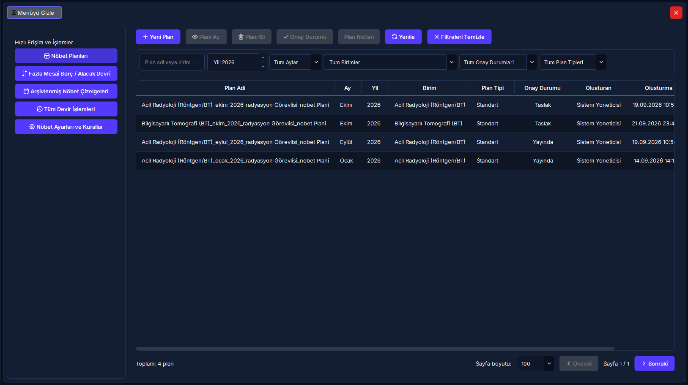
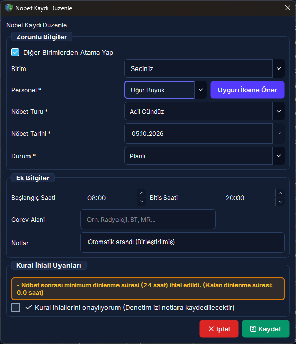
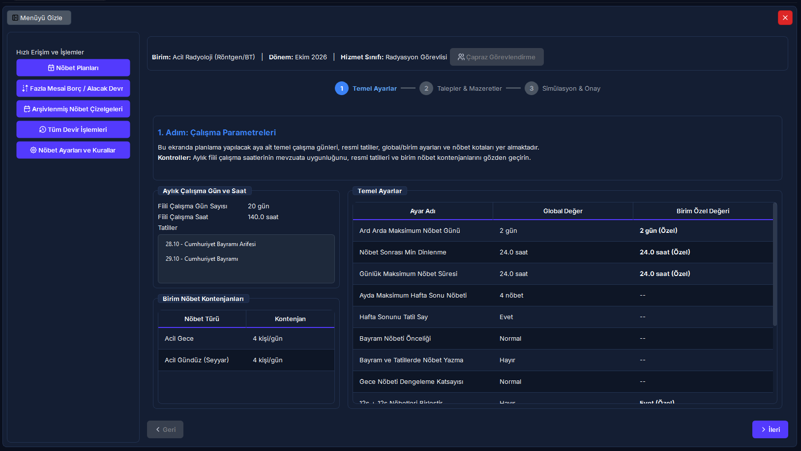
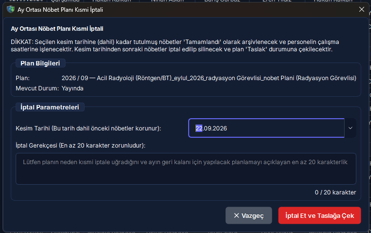

Nöbet Hazırlık, Çizelge Matrisi & Solver Motoru
Aylık fiili çalışma parametrelerinin hazırlanması, arka plan iş parçacığında çalışan kural tabanlı optimizasyon motoru, interaktif çizelge matrisi, kural ihlal onay mekanizması, otomatik anlık görüntü (snapshot) koruması ve kesim tarihli kısmi plan iptal rehberi.
Hızlı Reçete: Otomatik Nöbet Dağıtımı, Matris Yönetimi ve Kısmi İptal
Radyasyon maruziyet sınırlarına (35s/40s) ve klinik ihtiyaçlara tam uyumlu, adil ve çakışmasız aylık nöbet çizelgesinin saniyeler içinde üretilmesi.
[Yeni Plan] ile ayı ve birimi seçip [Hazırlık Sihirbazı] parametrelerini onaylayın; [Otomatik Olustur] ile motoru çalıştırın; kalan boş günleri [Çapraz Birimden Doldur] ile tamamlayın veya [Çizelgeyi Düzenle] ile matrisi yönetin.
Mevcut taslak JSON olarak otomatik yedeklenir; solver arka planda koşturulurken UI donmaz; manuel ihlaller denetim izine kaydedilir; kısmi iptalde kesim tarihine kadar geçmiş korunur.
5N1K Kural ve Arayüz Çözümleme Tablosu
Nöbet hazırlık, çizelge düzenleme ve solver motorunda yer alan bileşenlerin işlevleri, çalışma mantıkları ve klinik etki düzeyleri.
Kritik Sahada Yanlış Bilinen Kurallar (Mit Avcısı)
Saha Mit Avcısı: "Otomatik Dağıtım Motoru Çalıştırıldığında Mevcut Taslağım Kalıcı Olarak Silinir mi?"
En Sık Karşılaşılan Solver ve Çizelge YanılgısıYanlış İnanış: "Üzerinde günlerce elle düzenleme yaptığım taslak planda yanlışlıkla [Otomatik Olustur] butonuna basarsam tüm manuel çalışmalarım üzerine yazılır, silinir ve eski halini asla geri getiremem."
Doğru Gerçek: HAYIR, ASLA KAYBOLMAZ. RADPYS Güvenlik Kalkanı uyarınca, [Otomatik Olustur] butonuna tıklandığı milisaniyede sistem mevcut çizelgenin eksiksiz bir JSON anlık görüntüsünü (snapshot) otomatik olarak arşiv dizinine depolar. Dağıtım motorunun ürettiği yeni sonucu beğenmezseniz veya önceki taslağınıza dönmek isterseniz, çizelge ekranındaki [Yedekten Taslak Yükle] butonuna tıklayarak saniyeler içinde çalışmanızı kurtarabilirsiniz.
Nöbet Hazırlık, Çözümleme ve Yayın Döngüsü Şeması
Yeni plan oluşturmadan solver motoru optimizasyonuna, matris denetiminden ay ortası kısmi iptal yönetimine kadar tüm yaşam döngüsü.
Arayüz Ekran Görünümleri
Nöbet plan listesi, çizelge düzenleme matrisi, istatistiki önizleme ve kısmi iptal diyalogları.




Adım Adım İşlem Rehberi
Saha operasyonlarında nöbet hazırlık ve solver motorunun en sık kullanılan 5 ana senaryosu.
Yeni Bir Nöbet Planı Başlatma ve Hazırlık Parametrelerini Onaylama
- Sol menüden [Nöbet Yönetimi] > [Nöbet Planları] ekranına gidin.
- Araç çubuğundaki yeşil [+ Yeni Plan] butonuna tıklayın.
- Açılan pencerede planlanacak Yıl, Ay ve Klinik Birim (Örn: Girişimsel Radyoloji) seçimini yapın.
- Sistem takvim analizini otomatik olarak tamamlar:
- Ayın gün sayısı ve resmi tatil günleri listelenir.
- Radyasyon personeli için haftalık 35 saat (aylık iş günü × 7 saat) kuralı otomatik hesaplanır.
- Radyasyon dışı personel için haftalık 40 saat (iş günü × 8 saat) standardı ayrıştırılır.
- [Planı Oluştur] butonuna basarak taslak plan kaydını oluşturun.
Solver Dağıtım Motorunu Çalıştırma ve Otomatik Çizelgeleme
- Oluşturulan taslak planın satırına tıklayıp [Çizelgeyi Düzenle] butonuna basın.
- Üst araç çubuğundaki mavi [Otomatik Olustur] butonuna tıklayın.
- Planlama başlamadan önce sistem, fazla mesai devrinin kaynağı olan dönemin (planlanan aydan iki ay önceki dönem) mutabakatını denetler. Bu dönemde nöbeti olup [Fazla Mesai Borç / Alacak Devri] ekranında kaydedilmemiş personel varsa otomatik oluşturma durdurulur ve eksik personel listelenir; önce ilgili dönemin mutabakatını hesaplayıp kaydedin. Sistemin ilk kullanımında veya o dönemde hiç nöbet yoksa devir 0 kabul edilir.
- Sistem arka planda aşağıdaki güvenlik ve hesaplama adımlarını işletir:
- Mevcut çizelgenin zaman damgalı JSON anlık görüntüsü (snapshot) otomatik arşivlenir.
- Dağıtım motoru ayrı bir arka plan iş parçacığında çalıştırılarak ana ekranın donması önlenir.
- Önceden onaylanmış personel talepleri ve sağlık kısıtları (gebelik, emzirme, 50 yaş) kilitlenir.
- Birim slotları kural hiyerarşisine göre en uygun personel kombinasyonlarıyla doldurulur.
- Optimizasyon tamamlandığında çizelge matrisi otomatik olarak güncellenir ve renk kodlarıyla ekrana gelir.
Çizelge Matrisinde Manuel Değişiklik ve Kural İhlal Onayı Verme
- Matris tablosunda değiştirmek istediğiniz hücreye çift tıklayın.
- Açılan personel listesinden yeni görevliyi seçin.
- Eğer seçilen personel o gün izinliyse, 24 saatlik dinlenme süresini doldurmamışsa veya fazla mesai tavanını aşıyorsa sistem kırmızı renkli Kural İhlali Uyarısı görüntüler.
- Aynı gün içinde çakışmayan gündüz ve gece vardiyaları (örneğin 08:00-20:00 ve 20:00-08:00) birimin günlük izin verilen süresini (örneğin 24 saat) aşmıyorsa, sistem "aynı tarihte nöbeti var" veya "24 saat dinlenme" uyarısı vermez. Bayram ve hafta sonu nöbet sayacında bu iki vardiya ise iki ayrı nöbet sayılır; böylece 24 saat tutan personel ile 12 saat tutan personel arasında bayram adaleti korunur. Limit uyarıları "Aylık maksimum bayram/tatil nöbeti üst limiti" ve "Aylık maksimum hafta sonu nöbeti üst limiti" olarak ayrı ayrı gösterilir.
- Acil klinik zorunluluk nedeniyle bu atamayı yapmak zorundaysanız:
- Diyalogdaki [Kural ihlallerini onaylıyorum] onay kutusunu işaretleyin.
- [Kaydet] butonuna basın.
- Bu işlem sistem tarafından otomatik olarak denetim izine (Audit Trail) yönetici kullanıcı adı, işlem zamanı ve ihlal gerekçesiyle kalıcı olarak kaydedilir.
Farklı Birimden Geçici Personel Görevlendirme
- Çizelge matrisi ekranında araç çubuğundaki [Geçici Personel Ekle] butonuna tıklayın.
- Kurum genel personel listesinden ilgili teknisyen veya hekimi aratarak seçin.
- Personelin dahil edileceği plan dönemi onaylandığında, personelin kadrosu kendi ana biriminde kalır; ancak bu ayki çizelge matrisine yeni bir satır olarak eklenir.
- Personel aynı ay içerisinde kendi ana biriminde de nöbete yazılmışsa, matristeki hücreleri sarı/amber vurgulanarak çakışma riski yöneticiye bildirilir.
Ay Ortasında Kısmi Plan İptali Uygulama (3 Gün Sınırı & Sudo Doğrulama)
- Yayınlanmış nöbet planında ay ortası krizleri (istifa, salgın, acil tadilat) meydana geldiğinde ilgili planı seçip [Ay Ortası Plan İptali] butonuna tıklayın.
- Kesim Tarihi alanından iptalin başlayacağı günü seçin. (Yasal kısıt: Kesim tarihi bugünden en fazla 3 gün geriye seçilebilir; geçmiş aylara veya haftalara dönük tahrifat engellenmiştir.)
- İptal Gerekçesi alanına en az 20 karakterlik kurumsal gerekçe girin.
- Yetkisiz veya sehven iptalleri önlemek için Yönetici Şifrenizi yazın.
- [Kısmi İptali Onayla] butonuna basın.
- Sistem kesim tarihinden önceki fiili nöbetleri, saatleri ve şua hak edişlerini kesinlikle korur; kesim tarihinden ay sonuna kadar olan tüm nöbet atamalarını iptal eder.
Sıkça Sorulan Sorular (SSS)
Ay ortasında personel işten ayrılırsa tüm ayın çizelgesini iptal etmek zorunda mıyım?
Geçmişe dönük en fazla kaç gün öncesine iptal kesim tarihi seçebilirim?
Sistem güvenlik protokolü gereğince kesim tarihi bugünün tarihinden en fazla 3 gün geriye seçilebilir. Bu kural, geçmişe dönük bordro, fiili hizmet zammı ve nöbet ücreti tahrifatını engellemek amacıyla konulmuş bir yasal denetim kilididir.
Kural ihlali içeren bir nöbet atamasını zorunlu olarak onaylarsam hukuki sorumluluk kime aittir?
Kural ihlali uyarısına rağmen [Kural ihlallerini onaylıyorum] kutucuğu işaretlendiğinde işlem, onaylayan yöneticinin kullanıcı kimliği (ID), tam tarih/saat damgası ve ihlal edilen kural parametreleriyle birlikte Denetim İzi (Audit Trail) veri tabanına kalıcı olarak mühürlenir. İdari teftişlerde bu kayıtlar resmi kanıt niteliğindedir.
Bir personel aynı ay içerisinde başka bir birimde de nöbet tutuyorsa sistem beni uyarır mı?
Evet. Çizelge matrisi, personelin diğer departmanlardaki nöbetlerini dinamik olarak sorgular. Personelin başka bir birimde aynı güne nöbeti varsa veya aradaki dinlenme süresi ihlal ediliyorsa ilgili hücre sarı/amber (#FEF3C7) arka plan ile renklendirilir ve hücre ipucunda diğer birimin nöbet detayı gösterilir.
Solver dağıtım motoru binlerce permutasyonu çözerken uygulama donar veya kilitlenir mi?
Hayır. Solver algoritması ana kullanıcı arayüzü iş parçacığından (Main GUI Thread) bağımsız olarak özel bir arka plan iş parçacığında (QThread) koşturulur. Bu esnada ekranda ilerleme animasyonu akar, arayüz akıcı kalır ve kullanıcı dilerse işlemi güvenle iptal edebilir.